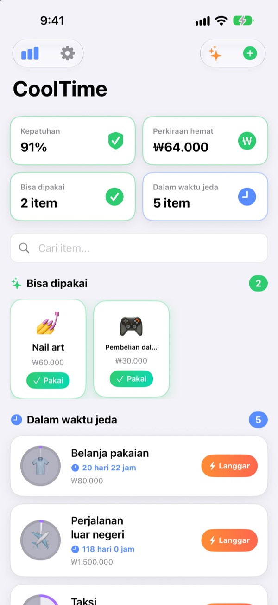
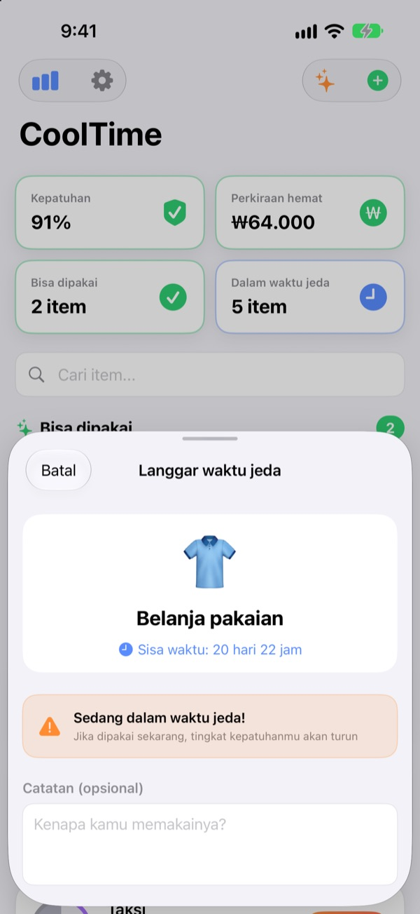
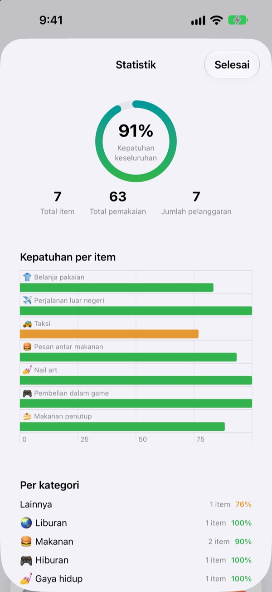
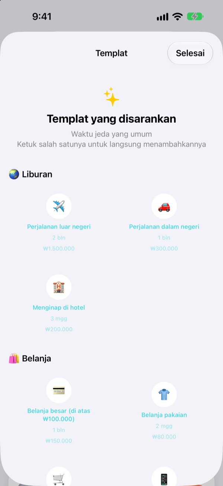

Pengin jajan?
Jeda dulu.
Beri pengeluaranmu waktu jeda, seperti skill di dalam game. Setelah dipakai, lingkarannya kosong lalu terisi perlahan sampai kamu boleh memakainya lagi.
Semua fitur gratis. Tanpa akun, tanpa iklan.

Coba di sini
Pilih item, ketuk Pakai, lalu majukan waktu sehari demi sehari. Kamu juga bisa lihat apa yang terjadi kalau dipakai saat waktu jeda masih berjalan.
Pernah bilang “sekali ini saja” sampai empat kali seminggu?
Tiap buka aplikasi pesan antar, rasanya sudah lama sekali tidak pesan, padahal kapan terakhir kali saja kamu tidak ingat pasti. CoolTime menunjukkan kapan terakhir kamu memakainya dan kapan boleh lagi, jadi keputusanmu datang dari aturan yang sudah kamu buat sebelumnya, bukan dari suasana hati saat itu.
Satu jeda lagi sebelum melanggar
Kalau kamu mau memakai sesuatu saat waktu jedanya belum selesai, aplikasi menampilkan sisa waktu dan mengingatkan bahwa tingkat kepatuhanmu akan turun.
Tetap perlu? Tulis alasannya dan biaya sebenarnya. Pelanggaran itu tetap tercatat di riwayat.

Hasil menahan diri, dalam angka
Tingkat kepatuhan, riwayat per item dan per kategori, serta jumlah pelanggaran, semuanya di satu layar.
Isi perkiraan biaya untuk sebuah item, dan aplikasi juga memperkirakan berapa yang kamu hemat bulan ini.

Waktu jeda favorit, sekali ketuk
Pilih dari templat yang disarankan, mulai dari perjalanan, belanja, dan makanan sampai kesehatan dan keuangan.
Kamu dapat notifikasi saat waktu jeda lewat setengah jalan dan saat selesai, dan widget di Layar Utama serta Layar Terkunci menampilkan sisa waktunya.

Mulai dalam tiga langkah
- 1
Tambahkan item
Pilih nama, emoji, dan lama menunggu dalam jam, hari, minggu, atau bulan. Atau ambil saja dari templat.
- 2
Ketuk Pakai saat memakainya
Waktu jeda langsung dimulai dan lingkarannya kosong.
- 3
Ada notifikasi, boleh lagi
Kamu dapat notifikasi saat waktu jeda selesai. Cukup izinkan notifikasi sekali di awal.
Waktu jeda di templat yang disarankan
- 🌏 Liburan
- Perjalanan luar negeri · Perjalanan dalam negeri · Menginap di hotel
- 🛍️ Belanja
- Belanja pakaian · Belanja impulsif · Elektronik
- 🍔 Makanan
- Makanan cepat saji · Pesan antar makanan · Kafe · Makanan penutup · Makan di luar · Camilan tengah malam
- 🎮 Hiburan
- Pembelian dalam game · Bioskop · Maraton serial · Konser / pertunjukan
- 💅 Gaya hidup
- Minum alkohol · Taksi · Nail art · Salon rambut · Pijat / spa
- 🏃 Kesehatan
- Hari istirahat (lewati olahraga) · Cheat day
- 💰 Keuangan
- Jual beli saham · Lotre
Setiap templat sudah berisi waktu tunggu yang pas dan perkiraan biaya. Tidak ada yang cocok? Buat sendiri saja.
Pertanyaan umum
Terlanjur pakai saat waktu jeda masih berjalan.
Tidak apa-apa. Riwayatmu mencatatnya sebagai pemakaian saat waktu jeda, dan waktu jeda dimulai lagi dari saat itu. Ini ikut dihitung dalam tingkat kepatuhan dan jumlah pelanggaran di Statistik.
Bagaimana penghematan dihitung?
Kalau kamu mengisi perkiraan biaya untuk sebuah item, aplikasi memperkirakan berapa kali waktu jeda membuatmu batal memakainya bulan ini, lalu menampilkan jumlah uangnya. Ini perkiraan, bukan angka pasti, dan item tanpa perkiraan biaya tidak ikut dihitung.
Notifikasinya tidak muncul.
Di iPhone, cek Pengaturan > Notifikasi > CoolTime. Kalau layar pertama aplikasi bilang notifikasi nonaktif, tombol Pengaturan di sana langsung membawamu ke situ.
Bagaimana cara menambahkan widget?
Sentuh dan tahan Layar Utama, ketuk + di kiri atas, cari CoolTime, lalu tambahkan. Ada juga widget untuk Layar Terkunci. Widget menampilkan apa yang bisa dipakai sekarang dan sisa waktunya.
Bagaimana cara menghapus catatan?
Menghapus item juga menghapus catatannya. Menghapus aplikasi menghapus semua catatan. Catatan hanya tersimpan di perangkatmu, jadi yang sudah dihapus tidak bisa dikembalikan.
Apakah bisa sinkron ke perangkat lain?
Belum. Catatanmu hanya ada di iPhone yang sedang kamu pakai. Sinkronisasi antarperangkat dan cadangan sudah masuk daftar di Pengaturan > Fitur yang Akan Datang.
Benar-benar gratis?
Ya. Tidak ada fitur yang dikunci di balik pembayaran. Kalau suka aplikasinya, kamu bisa memberi tip ke pengembang dari Pengaturan, tapi tidak ada yang berubah kalau tidak.
Apakah catatanku dikirim ke suatu tempat?
Tidak. Tanpa akun dan tanpa iklan, waktu jeda dan riwayatmu hanya disimpan di iPhone. Pengembang hanya menerima statistik penggunaan anonim, laporan kesalahan, dan masukan yang kamu kirim sendiri. Rinciannya ada di Kebijakan Privasi di bawah.
Ketemu bug atau ingin fitur baru.
Kabari kami lewat Pengaturan > Dukungan > Kirim Masukan di aplikasi, DM Instagram ke @lee25_ios, atau email di bawah. Kalau ada layar yang macet, sebutkan apa yang sedang kamu lakukan dan versi iOS-mu supaya kami bisa menemukannya jauh lebih cepat.
Ada pertanyaan atau masukan? Kirim ke leeo@kakao.com.